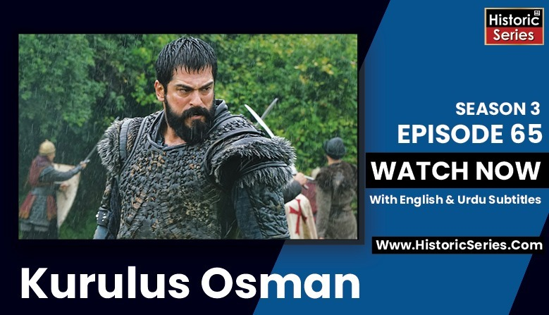

Kurulus Osman Episode 1

watch kurulus Osman episode 1 here: And support us
کورلش عثمان 400 خیموں کے ایک مشہور ترکمان قائی قبیلے کے سردار ارتغل غازی کے بیٹے سردار عثمان اور سلطنت عثمانیہ کے بانی کی زندگی پر مرکوز ہے۔ جنہوں نے اک مسلم ترک ریاست کی بنیاد رکھی جو 600 سال تک قائم رہی۔
غازی ارتغل اور حلیمہ سلطان کے ہاں عثمان کی ولادت 1258 میں ہوئی۔ عثمان غازی لمبے قد کے ایک انتہائی مضبوط جسامت کے آدمی تھے جن کی بڑی آنکھیں اور بھویں گھنی تھی۔ ان کے کندھے چوڑے تھے۔ وہ بہترین گھوڑسوار اور نیزہ باز تھے۔
ترکمان ترکوں کے قائی قبیلے کے لوگوں کے لئے عثمان انتہائی منصف اور مہربان تھے جو ہر ہفتے غرباء کو ایک وقت کا عمدہ کھانا ضرور دیا کرتا تھے۔ عثمان غازی ایک شاندار راہنما اور منصف حکمران تھے۔
1281 میں، جب قائی قبیلے کی قیادت سنبھالی تو عمر فقط 23 سال تھی۔ اور یہی ریاست کی جدوجہد کا باضابطہ اور منظم آغاز تھا۔ مشہور سردار عمر صاحب کی بیٹی سے شادی کی جنہوں نے اورہان کو جنم دیا جو بعد میں تخت نشین ہوا۔
کورلش عثمان سیزن 2 بہترین اور معیاری اردو سبٹائٹل کے ساتھ ہسٹورک سیریز ڈاٹ کام پر دیکھ